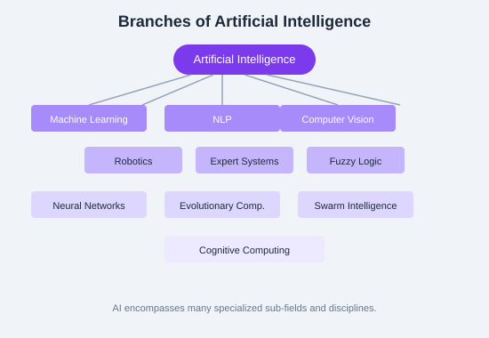

← Back to Tutorials

Artificial Intelligence Tutorial: A Complete Guide
A comprehensive guide to Artificial Intelligence — from foundational concepts and history to advanced topics like knowledge representation, expert systems, and industry applications. Each chapter includes explanations, pseudocode, diagrams, and hands-on exercises.
Table of Contents
1. Introduction to AI Overview, Goals, Approaches, Applications 2. History & Evolution Timeline, Key Milestones, AI Winters, Modern AI 3. Types of AI Narrow AI, General AI, Super AI, Reactive, Limited Memory, Theory of Mind, Self-Aware 4. AI Terminology Key Terms: Agent, Percept, Heuristic, Overfitting, etc. 5. Tools & Frameworks TensorFlow, PyTorch, scikit-learn, Keras, JAX, Hugging Face 6. Applications & Real-Life Examples Healthcare, Finance, Transportation, Entertainment, Education 7. Ethics & Fairness Bias, Fairness, Transparency, Privacy, Accountability, Regulation 8. Challenges & Limitations Data Issues, Explainability, Robustness, Scalability, Common Pitfalls 9. Branches of AI ML, NLP, Computer Vision, Robotics, Neural Networks, Fuzzy Logic, Evolutionary Computation, Swarm Intelligence, Cognitive Computing 10. Intelligent Systems Concepts, Components, Types, Characteristics 11. Agents & Environments Agent Models, Environment Types, Interaction, PEAS Framework 12. Problem Solving Search Algorithms, CSPs, BFS, DFS, A*, Heuristics 13. Knowledge Representation Logic, Inference, FOL, Unification, Resolution, Chaining 14. Expert Systems Concepts, Architecture, Applications, Advantages & Limitations 15. AI in Practice Predictive Analytics, Personalization, Healthcare, Autonomous Vehicles 16. AI by Industry Manufacturing, Banking, Healthcare, Marketing, Automotive, Data Analytics 17. Advanced Topics Research Areas, Cognitive Computing, AI Tools, Frontier Models 18. Practice & Resources Interview Questions, Study Plan, Bootcamp, Certification 19. References Glossary, Cheatsheet, Useful Resources
Start Learning →